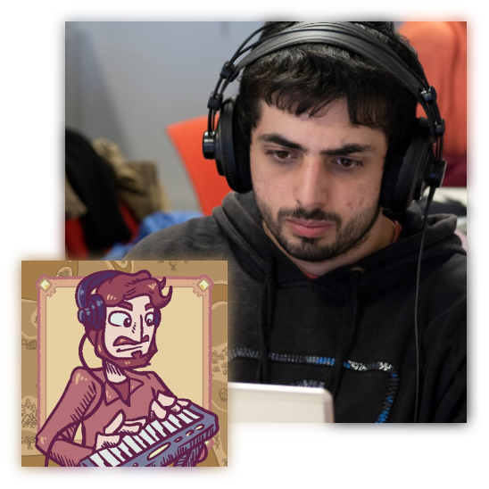
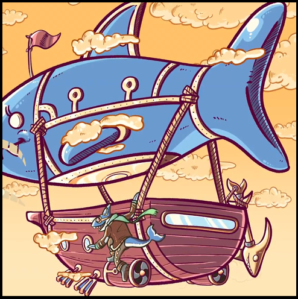

John always had an astounding capacity for multi and interdisciplinary work that complements his solid education on music composition as well as his knowledge in programming and videogames. He also shows a remarkable understanding of the dialectic of historical movements and their implications in technology and art. - Rui Penha (PhD), composer, professor at ESMAE and researcher at INESC TEC
John has composed noteworthy musical works, as well as installations and music for videogames, demonstrating an ease at relating his musical work with other media. He creates artistic works that show this enthusiasm and does interesting musicological research which he relates to his practical work.
- Carlos Caires (PhD), composer, professor at ESML and researcher at CESEM

John Elliott Lisbon, Portugal Composer and Sound Designer
Ludography
Townseek Relaxing exploration and trading game. Music and Sound Design.